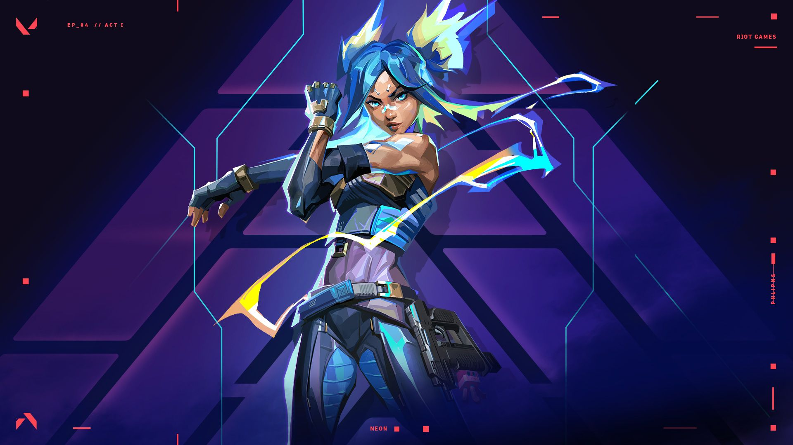

¿Quién es Neon?
Neon es una duelista de Valorant originaria de Filipinas, conocida por su velocidad extrema y estilo eléctrico. Puede recorrer el mapa en segundos, desbordando a sus enemigos antes de que puedan reaccionar. Su energía no es solo actitud… literalmente corre con electricidad.
¿Qué habilidades tiene Neon?
Neon utiliza habilidades basadas en velocidad y electricidad. Puede aumentar su velocidad para desplazarse rápidamente, lanzar paredes de energía que bloquean la visión y deslizarse para sorprender a sus enemigos. Su habilidad definitiva le permite disparar rayos eléctricos con gran precisión y rapidez, convirtiéndola en una amenaza constante.